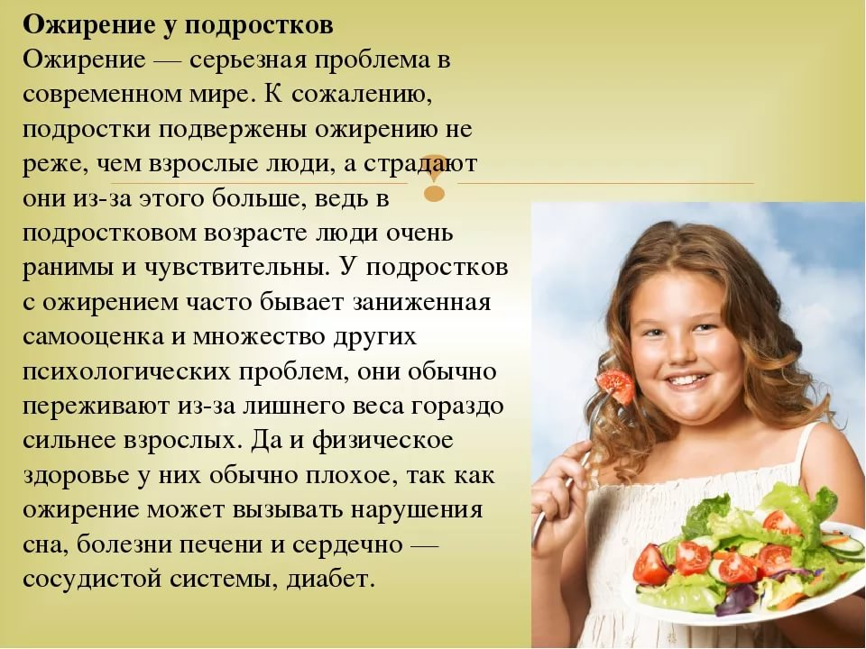
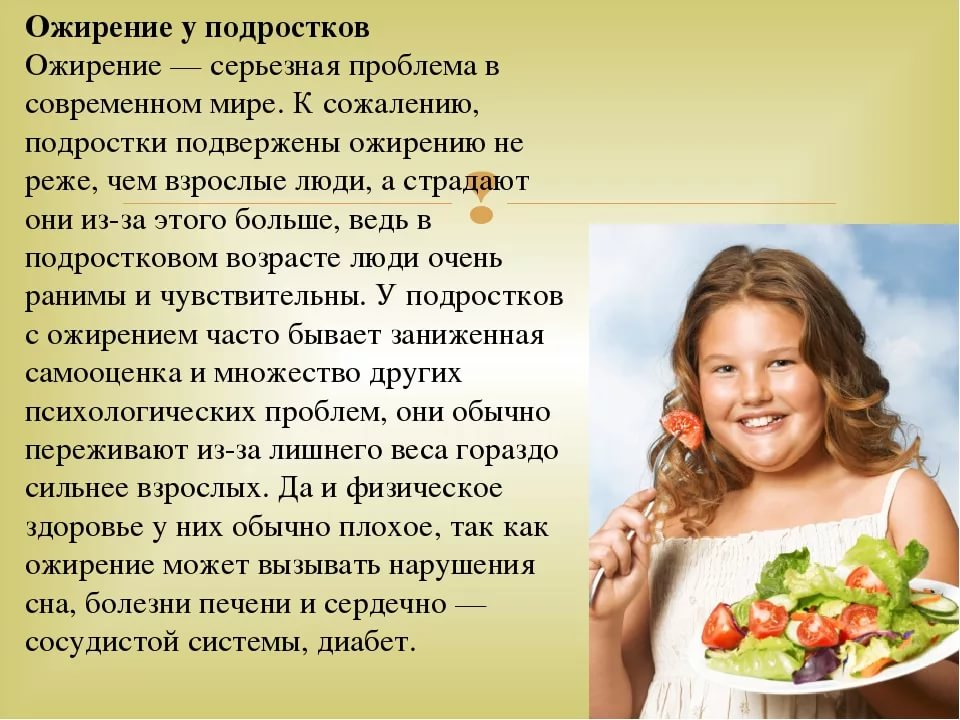

ЭЛЕУТЕРОКОККА
ШИПОВНИКА ПЛОДЫ (ИЗМЕЛЬЧЕННЫЕ)
ШАЛФЕЯ ЛИСТ
ЧЕРНИКИ ПЛОДЫ
ЧЕРЕДЫ ТРАВА
ЧАГА
СОСНОВЫЕ ПОЧКИ
ЧАБРЕЦА ТРАВА
ХВОЩА ТРАВА
УСПОКОИТЕЛЬНЫЙ


Ожирение
Личение ожирения
Лечение ожирения, т.е. похудение проводиться комплексно и включает в себя:
— диету;
—физическую нагрузку;
— лекарственные препараты (по назначению врача);
— лечение осложнений (если таковые имеются).
Для лечения 1 и 2 степени ожирения достаточно правильного питания и физической нагрузки.
Симптомы ожирения
Основными признаками ожирения являются:
— увеличение массы тела из-за отложения жира;
— сонливость, слабость, снижение работоспособности;
— одышка, тошнота;
— повышенная потливость;
— отеки;
— растяжки на коже в местах скопления лишних килограммов;
— повышение артериального давления;
— стенокардия, тахикардия;
— запоры;
— боли в позвоночнике и суставах;
— нарушения деятельности сердечно-сосудистой, дыхательной и пищеварительной систем;
— нервозность, раздражительность;
— снижение самооценки, недовольство внешним видом, закомплексованность, трудности в общении с людьми;
— снижение полового влечения.
У женщин ожирение может сопровождаться нарушениями менструального цикла, бесплодием, у мужчин ухудшением потенции.
Осложнения ожирения
—Гипертония;
— Инфаркт;
— Инсульт;
— Артрит;
— Депрессия;
— Сахарный диабет;
— Атеросклероз;
— Грыжи;
— Злокачественные опухоли (Рак).
Степени ожирения

 
